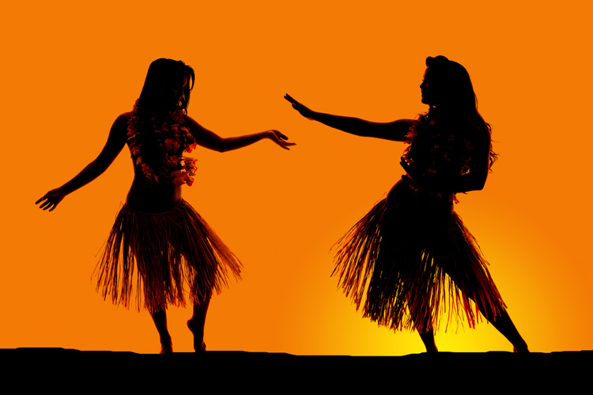

About Hawaii

Hawaii sits over 2,000 miles west of California. Hawaii is the world’s largest island chain, and it’s the only U.S. state completely made up of islands. But only 7 of its 132 islands are inhabited: Hawaii (also known as the Big Island), Maui, Molokai, Lanai, Oahu, Kauai, and Niihau.
Double Rainbows
What causes double rainbows? We have seen it in Arizona also.
Best Surfing
What makes a good surfing beach?
Lei
Worn around the head, the haku lei is popular in Mauii weddings. Some have colorful tropical flowers.
Plumeria
One of the most delightfully scented flowers on Kauai, Plumeria can be found in white, pink, red and yellow. Commercially grown in Hawaii for lei production.
Bootstrap Components
Let's try some common bootstrap components to see how they work.
Oahu
Oahu Brings the Best of City Life and Country Living.
Maui
Maui is Considered Heaven on Earth.
Kauai
Kauai is Nature at Its Finest.
Molokai
Molokai and Lanai Offer a Laidback Getaway.
Lanai
Molokai and Lanai Offer a Laidback Getaway.
Shaka!
Residents of Hawaii use the shaka to convey the "Aloha Spirit", a concept of friendship, understanding, compassion, and solidarity among the various ethnic cultures that reside in Hawaii, lacking a direct semantic to literal translation. The shaka can also be used to express "howzit?", "thanks, eh?", and "all right!". Drivers will often use it on the road to communicate distant greetings and gratitude.
The shaka sign, sometimes known as "hang loose", is a gesture of friendly intent often associated with Hawaii and surf culture. It consists of extending the thumb and smallest finger while holding the three middle fingers curled, and gesturing in salutation while presenting the front or back of the hand; the hand may be rotated back and forth for emphasis. While the shaka sign has spread internationally from its Hawaiian cultural roots to surf culture and beyond, the hand gesture also bears a variety of meaning in different contexts and regions of the world.
Waikiki, with its beautiful stretch of oceanfront beach, is Hawaii's biggest tourist attraction. A suburb of Honolulu, Waikiki is popular for its big resorts, dining, entertainment, and shopping. The Waikiki Historic Trail includes historic markers made of surfboards, inspired by Waikiki's own Duke Kahanamoku, an Olympic gold medalist swimmer and avid surfer. The boardwalk, known as the Waikiki Beach Walk, is lined with cafes and entertainment venues, while Kuhio and KalaKaua Avenues are where the bulk of the area's restaurants and boutiques can be found. Diamond Head State Monument sits at the end of the crescent-shaped beach, creating a distinctive profile on the coastline. It was once an important vantage point for the island's coastal defense, and a steep hike to the top brings you to the old bunkers and artillery control station and rewards your efforts with panoramic views.
Pearl Harbor is a National Historic Landmark and active military base that earned its place in history for the 1941 attack, which killed 1,177 servicemen on the USS Arizona. The site is now home to several attractions that are part of the World War II Valor in the Pacific Monument, including the USS Arizona Memorial, which floats above the remains of the sunken ship - parts of which can be seen protruding from the water. There is no cost for a tour of the memorial, however reservations are recommended due to its popularity. The Pearl Harbor Visitor Center has free admission and is the meeting place for tours, including transportation to the Pacific Aviation Museum on Ford Island, where visitors can see WWII aircraft and artifacts, as well as experience landing an airplane on an aircraft carrier in a flight simulator. Other attractions include the USS Oklahoma, USS Utah, and the Battleship USS Missouri whose deck can be toured by visitors.
The park's centerpiece, Kilauea, has been active as recently as 2018, and visitors should be aware that portions of the park are closed during periods of seismic activity that might pose a threat. Located on the Big Island of Hawaii, Volcanoes National Park offers a unique, close-up look at an active volcano system where lava seeps from fissures in the earth. The surrounding landscape is shaped by cooled lava rock, both old and new, which has flowed over roads in a display of its unstoppable force. During the area's most active periods, tourists have the chance of experiencing the thrill of feeling seismic activity, hearing the boom of gas emissions, or even seeing a pillar of ash escaping into the air. The park has many things to do and see, including the Thurston Lava Tube, the Jagger Museum, Devastation Trail, and the steaming Halema'uma'u crater. Address: 1 Crater Rim Drive, Hawaii National Park, Hawaii